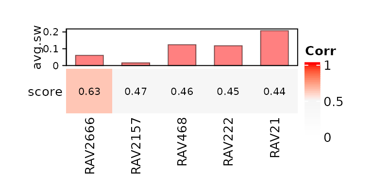
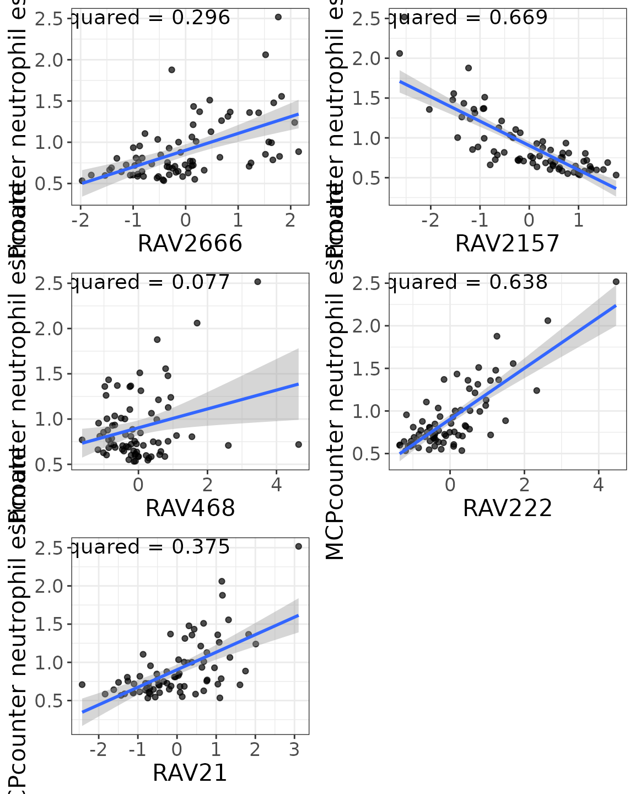
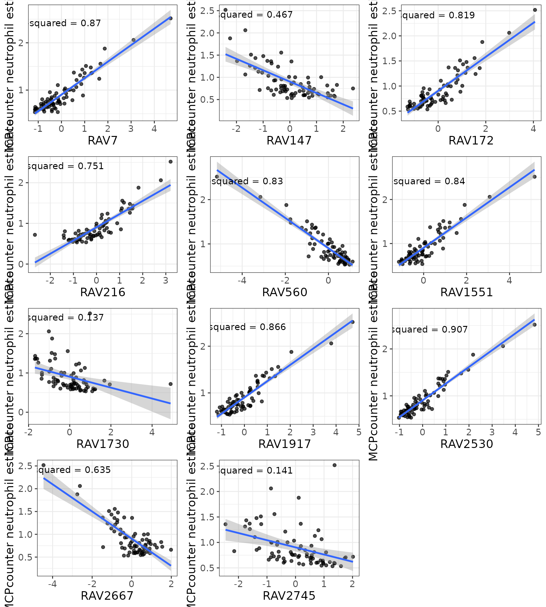

vignettes/NARES/repeat_Fig3_NARES.Rmd
repeat_Fig3_NARES.RmdIn this vignette, we are reproducing Figure 3 of the multiPLIER paper using GenomicSuperSignature.
To directly compare with the results from multiPLIER paper, we used the RAVmodel annotated with the same priors: bloodCellMarkersIRISDMAP, svmMarkers, and canonicalPathways.
data.dir <- system.file("extdata", package = "GenomicSuperSignaturePaper")
RAVmodel <- readRDS(file.path(data.dir, "RAVmodel_PLIERpriors.rds"))
RAVmodel#> class: PCAGenomicSignatures
#> dim: 13934 4764
#> metadata(7): cluster size ... updateNote version
#> assays(1): model
#> rownames(13934): CASKIN1 DDX3Y ... CTC-457E21.9 AC007966.1
#> rowData names(0):
#> colnames(4764): RAV1 RAV2 ... RAV4763 RAV4764
#> colData names(4): RAV studies silhouetteWidth gsea
#> trainingData(2): PCAsummary MeSH
#> trainingData names(536): DRP000987 SRP059172 ... SRP164913 SRP188526
updateNote(RAVmodel)#> [1] "536 refine.bio studies/ top 90% varying genes/ GSEA with 3 priors from PLIER (bloodCellMarkersIRISDMAP, svmMarkers, and canonicalPathways)"NARES (Grayson et al., 2015) is a nasal brushing microarray dataset that includes patients with ANCA-associated vasculitis, patients with sarcoidosis and healthy controls among other groups and was projected into the MultiPLIER latent space.
exprs <- readr::read_tsv("data/NARES_SCANfast_ComBat_with_GeneSymbol.pcl") %>%
as.data.frame
rownames(exprs) <- exprs$GeneSymbol
dataset <- as.matrix(exprs[,3:ncol(exprs)])
dataset[1:2, 1:4]
#> N1004 N1007 N1017 N1025
#> A1BG 0.05641348 0.06333364 0.001833597 -0.05897817
#> NAT2 -0.14980276 -0.09186388 -0.093684629 -0.06080664NARES data doesn’t have any information about the cell type composition of the samples, so in the multiPLIER paper, the authors applied MCPcounter (Becht, et al. Genome Biology. 2016.) , which is a method for estimating cell type abundance in solid tissues.
As in multiPLIER paper, we tested if neutrophil-associated RAVs from RAVmodel are well-correlated with the neutrophil estimates from MCPcounter.
devtools::install_github("ebecht/MCPcounter",
ref = "a79614eee002c88c64725d69140c7653e7c379b4",
subdir = "Source",
dependencies = TRUE)
mcp.results <- MCPcounter::MCPcounter.estimate(exprs.mat, featuresType = "HUGO_symbols")
mcp.melt <- reshape2::melt(mcp.results, varnames = c("Cell_type", "Sample"),
value.name = "MCP_estimate")
readr::write_tsv(mcp.melt, "data/NARES_ComBat_MCPCounter_results_tidy.tsv")
val_all <- validate(dataset, RAVmodel)
validated_ind <- validatedSignatures(val_all, num.out = 5, swCutoff = 0, indexOnly = TRUE)
heatmapTable(val_all, num.out = 5, swCutoff = 0)
RAV1551, neutrophil-associated RAV based on SLE-WB dataset, is not found in the top 5 validated RAVs of NARES dataset.
ordered <- val_all[order(val_all$score, decreasing = TRUE),]
which(rownames(ordered) == "RAV1551")
#> [1] 14
head(val_all, 15)
#> score PC sw cl_size cl_num
#> RAV1 0.12863979 3 -0.0547016329 6 1
#> RAV2 0.31305917 3 0.0642625583 21 2
#> RAV3 0.10702499 5 -0.0180033466 4 3
#> RAV4 0.36846447 3 -0.0400558417 7 4
#> RAV5 0.31677523 7 0.0578618935 3 5
#> RAV6 0.17678479 7 -0.0252097271 3 6
#> RAV7 0.32427314 1 -0.1186440580 3 7
#> RAV8 0.19084572 3 -0.0003333517 6 8
#> RAV9 0.30905902 3 -0.0371620189 3 9
#> RAV10 0.11680460 7 -0.0640990442 5 10
#> RAV11 0.10424807 2 -0.0798252918 4 11
#> RAV12 0.06660118 4 -0.0124374734 2 12
#> RAV13 0.05467661 5 -0.0413567953 2 13
#> RAV14 0.08154098 1 -0.0052718393 2 14
#> RAV15 0.14641620 3 -0.0047557574 3 15
## RAVs containing the keyword, "neutrophil", in each GSEA result
a <- gsea(RAVmodel)
b <- sapply(a, function(x) {
y <- x[order(x$NES, decreasing = TRUE),][1:3,] # top 3 NES
grep("neutrophil", y[["Description"]], ignore.case = TRUE)
})
c <- sapply(b, length)
table(c)
#> c
#> 0 1 2
#> 4655 98 11
## RAVs with two keyword-containing pathways
which(c == 2)
#> RAV7 RAV147 RAV172 RAV216 RAV560 RAV1551 RAV1730 RAV1917 RAV2530 RAV2667
#> 7 147 172 216 560 1551 1730 1917 2530 2667
#> RAV2745
#> 2745
sig_ind <- gsub("RAV", "", names(which(c == 2))) %>% as.numericHere, we tested the association between neutrophil count estimate of NARES data against scores from validated RAVs.
## Remove Sample category "gene"
gene_ind <- which(mcp.melt$Sample == "Gene")
mcp.melt <- mcp.melt[-gene_ind,]
## Subset sampleScore to join with MCPcounter
sampleScore_sub <- sampleScore[,validated_ind] %>% as.data.frame
sampleScore_sub <- tibble::rownames_to_column(sampleScore_sub)
colnames(sampleScore_sub)[1] <- "Sample"
## Join with MCPcounter neutrophil estimates
dat <- dplyr::filter(mcp.melt, Cell_type == "Neutrophils") %>%
dplyr::inner_join(y = sampleScore_sub, by = "Sample")
head(dat, 3)
#> Cell_type Sample MCP_estimate RAV2666 RAV2157 RAV468 RAV222
#> 1 Neutrophils N1004 0.6064648 -0.3121532 0.5998012 0.6141872 0.09946958
#> 2 Neutrophils N1007 1.8775036 -0.2644134 -1.2325787 0.5445723 1.26085916
#> 3 Neutrophils N1017 0.6006657 -1.0547257 1.2549837 -0.2114472 -1.08045707
#> RAV21
#> 1 0.08009604
#> 2 1.16034294
#> 3 -0.71583837RAV1551 wasn’t recovered and the most of the validated RAVs show a weak correlation with neutrophil-count estimate, implying that neutrophil count is not a major feature of the NARES dataset.
plots <- list()
for (i in seq_along(validated_ind)) {
plot <- LVScatter(dat, paste0("RAV", validated_ind[i]),
y.var = "MCP_estimate",
ylab = "MCPcounter neutrophil estimate")
plots[[i]] <- plot
}
gridExtra::grid.arrange(grobs = plots, cols = 2)
Object dat2 is a data frame with neutrophil-estimate from MCPcounter and scores assigned by significant RAVs selected by GSEA.
## Subset sampleScore to join with MCPcounter
sampleScore_sub2 <- sampleScore[,sig_ind] %>% as.data.frame
sampleScore_sub2 <- tibble::rownames_to_column(sampleScore_sub2)
colnames(sampleScore_sub2)[1] <- "Sample"
## Join with MCPcounter neutrophil estimates
dat2 <- dplyr::filter(mcp.melt, Cell_type == "Neutrophils") %>%
dplyr::inner_join(y = sampleScore_sub2, by = "Sample")
head(dat2, 3)
#> Cell_type Sample MCP_estimate RAV7 RAV147 RAV172 RAV216
#> 1 Neutrophils N1004 0.6064648 -0.2540815 -0.6027338 -0.351857 -0.7289638
#> 2 Neutrophils N1007 1.8775036 1.8635788 -2.2385203 1.853171 1.8184626
#> 3 Neutrophils N1017 0.6006657 -0.9249652 0.5691604 -1.195890 -0.7340130
#> RAV560 RAV1551 RAV1730 RAV1917 RAV2530 RAV2667 RAV2745
#> 1 0.5442089 -0.09409653 1.1431430 -0.3368281 -0.3727521 0.2832317 0.7815207
#> 2 -1.9521744 1.91008170 -0.8570011 2.0495807 2.1782371 -2.7525391 0.1127065
#> 3 1.1191780 -0.92446139 0.2169728 -0.9805265 -0.9231144 0.2927935 0.7343962
plots <- list()
for (i in seq_along(sig_ind)) {
plot <- LVScatter(dat2, paste0("RAV", sig_ind[i]),
y.var = "MCP_estimate",
ylab = "MCPcounter neutrophil estimate")
plots[[i]] <- plot
}
gridExtra::grid.arrange(grobs = plots, cols = 2)
sessionInfo()
#> R version 4.0.3 (2020-10-10)
#> Platform: x86_64-pc-linux-gnu (64-bit)
#> Running under: Ubuntu 18.04.5 LTS
#>
#> Matrix products: default
#> BLAS: /usr/lib/x86_64-linux-gnu/openblas/libblas.so.3
#> LAPACK: /usr/lib/x86_64-linux-gnu/libopenblasp-r0.2.20.so
#>
#> locale:
#> [1] LC_CTYPE=en_US.UTF-8 LC_NUMERIC=C
#> [3] LC_TIME=en_US.UTF-8 LC_COLLATE=en_US.UTF-8
#> [5] LC_MONETARY=en_US.UTF-8 LC_MESSAGES=en_US.UTF-8
#> [7] LC_PAPER=en_US.UTF-8 LC_NAME=C
#> [9] LC_ADDRESS=C LC_TELEPHONE=C
#> [11] LC_MEASUREMENT=en_US.UTF-8 LC_IDENTIFICATION=C
#>
#> attached base packages:
#> [1] grid parallel stats4 stats graphics grDevices utils
#> [8] datasets methods base
#>
#> other attached packages:
#> [1] ComplexHeatmap_2.6.2 RColorBrewer_1.1-2
#> [3] dplyr_1.0.2 GenomicSuperSignaturePaper_0.0.3
#> [5] GenomicSuperSignature_0.0.6 SummarizedExperiment_1.20.0
#> [7] Biobase_2.50.0 GenomicRanges_1.42.0
#> [9] GenomeInfoDb_1.26.2 IRanges_2.24.1
#> [11] S4Vectors_0.28.1 BiocGenerics_0.36.0
#> [13] MatrixGenerics_1.2.0 matrixStats_0.57.0
#> [15] BiocStyle_2.18.1
#>
#> loaded via a namespace (and not attached):
#> [1] colorspace_2.0-0 ggsignif_0.6.0 rjson_0.2.20
#> [4] ellipsis_0.3.1 rio_0.5.16 rprojroot_2.0.2
#> [7] circlize_0.4.11 XVector_0.30.0 GlobalOptions_0.1.2
#> [10] fs_1.5.0 clue_0.3-58 rstudioapi_0.13
#> [13] farver_2.0.3 ggpubr_0.4.0 bit64_4.0.5
#> [16] fansi_0.4.1 splines_4.0.3 knitr_1.30
#> [19] Cairo_1.5-12.2 broom_0.7.2 cluster_2.1.0
#> [22] dbplyr_2.0.0 png_0.1-7 BiocManager_1.30.10
#> [25] readr_1.4.0 compiler_4.0.3 httr_1.4.2
#> [28] backports_1.2.1 assertthat_0.2.1 Matrix_1.2-18
#> [31] cli_2.2.0 htmltools_0.5.0 tools_4.0.3
#> [34] gtable_0.3.0 glue_1.4.2 GenomeInfoDbData_1.2.4
#> [37] rappdirs_0.3.1 Rcpp_1.0.5 carData_3.0-4
#> [40] cellranger_1.1.0 pkgdown_1.6.1 vctrs_0.3.5
#> [43] nlme_3.1-151 xfun_0.19 stringr_1.4.0
#> [46] openxlsx_4.2.3 lifecycle_0.2.0 rstatix_0.6.0
#> [49] zlibbioc_1.36.0 scales_1.1.1 ragg_0.4.0
#> [52] hms_0.5.3 yaml_2.2.1 curl_4.3
#> [55] memoise_1.1.0 gridExtra_2.3 ggplot2_3.3.2
#> [58] stringi_1.5.3 RSQLite_2.2.1 desc_1.2.0
#> [61] zip_2.1.1 shape_1.4.5 rlang_0.4.9
#> [64] pkgconfig_2.0.3 systemfonts_0.3.2 bitops_1.0-6
#> [67] evaluate_0.14 lattice_0.20-41 purrr_0.3.4
#> [70] labeling_0.4.2 bit_4.0.4 tidyselect_1.1.0
#> [73] magrittr_2.0.1 bookdown_0.21 R6_2.5.0
#> [76] magick_2.5.2 generics_0.1.0 DelayedArray_0.16.0
#> [79] DBI_1.1.0 pillar_1.4.7 haven_2.3.1
#> [82] foreign_0.8-79 mgcv_1.8-33 abind_1.4-5
#> [85] RCurl_1.98-1.2 tibble_3.0.4 crayon_1.3.4
#> [88] car_3.0-10 BiocFileCache_1.14.0 rmarkdown_2.6
#> [91] GetoptLong_1.0.4 readxl_1.3.1 data.table_1.13.4
#> [94] blob_1.2.1 forcats_0.5.0 digest_0.6.27
#> [97] tidyr_1.1.2 textshaping_0.2.1 munsell_0.5.0